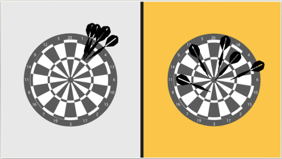
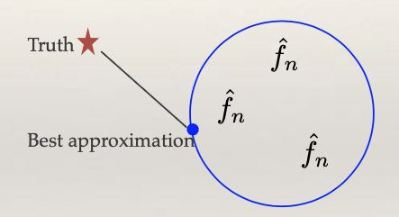
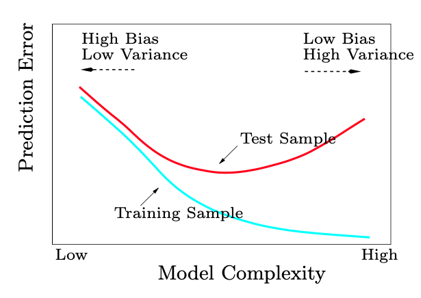

1.1.5. Bias and variance tradeoff
The Darts Game
To understand the bias and variance tradeoff, let’s examine the performance of two players in a darts game.
{kind=link}
Player 1 consistently throws darts close together, but they consistently miss the target by aiming at the wrong point. This player exhibits low variance but high bias.
Player 2’s throws show a lot of variability, with darts landing both near and far from the target. However, these attempts are distributed around the correct target area, resulting in low bias but high variance.
If we evaluate their performance by calculating the expected or average distance from the true center, both players achieve a similar overall performance, despite the differing distribution of errors between bias and variance.
Bias and Variance Tradeoff in Statistical Learning
In statistical learning, the total error in predictions can be attributed to two main sources: bias and variance.
{kind=link}
When learning a regression function or a classification function, we must work within a predefined function space, the blue circle. For example, this space may consist of linear functions, quadratic functions, or other predetermined structures. However, the “truth” may lie outside the blue circle, implying that even with infinite data, we cannot perfectly capture it.
Bias is the gap between the truth and the best approximation achievable within the function space.
Variance reflects the fluctuations of our learned function within the function space. We often denote the learned function as f_n, where the subscript ‘n’ indicating its randomness, which arises because the learned function can vary based on the sample of data it’s trained on.
The relationship is clear: if the function space is limited, bias tends to be high while variance is low. Conversely, selecting a larger function space reduces bias but increases variance because f_n can vary with a much larger range of possibilities. Striking the right balance between bias and variance is a crucial aspect of statistical learning.
Model Complexity and Flexibility
Model complexity is often measured by the flexibility of the model. For instance:
Linear model with two predictors (low complexity)
Linear model with ten predictors (medium complexity)
Model with quadratic terms (high complexity)
As model complexity increases (i.e., the function space expands), there’s a trade-off: bias decreases while variance increases. Test error, which is a combination of both bias and variance, typically follows a U-shaped curve, with the optimal point lying somewhere in the middle. At one extreme, we find models of low complexity, leading to high bias but low variance. At the other end, high-complexity models result in low bias but high variance.
{kind=link}
Interestingly, in the era of deep learning, researchers have observed that the performance curve may exhibit a ‘double descent’ shape, showing another minimum in error as complexity increases beyond the traditional optimum. This intriguing behavior challenges traditional understanding. We will explore this double descent behavior in an upcoming coding assignment.
Strategies to Address Bias and Variance
We will learn various flexible modeling techniques to reduce bias. Reducing bias is crucial because it enables us to approach the true function when provided with abundant data. However, this reduction in bias comes at the cost of increased variance. Therefore, we need to adopt strategies that strike the right balance between bias and variance:
Regularization: This approach starts with a complex model and progressively reduces its parameters, corresponding to nested function spaces. Different values of lambda, a tuning parameter, control the level of regularization. An appropriate choice of lambda can be determined adaptively based on the data.
Ensemble Methods: Ensemble methods combine multiple models from the low bias, high variance side to reduce variance. Averaging is a common technique for reducing variance.
Final Note
While this course primarily focuses on prediction and statistical learning, data scientists often use predictive models for diverse purposes, including exploration, decision-making, and generating actionable insights. In certain scenarios, simpler and more interpretable models are preferred over complex black-box models.